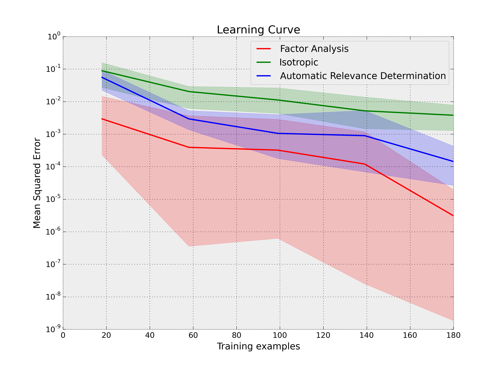

The target function maps a 4-dimensional vector onto a real value. One of the dimensions is ignored (and should thus be pruned away by ARD). The other dimensions are correlated, which can be exploited by FAD.
The hyperparameters are optimized within .. math:
\theta_i \in [1e-4, 1e2]
See Rasmussen and Williams 2006, p107 for details regarding the different variants of the squared exponential kernel.
Python source code: plot_gp_learning_curve.py
print(__doc__)
# Author: Jan Hendrik Metzen <jhm@informatik.uni-bremen.de>
# Licence: BSD 3 clause
import numpy as np
import matplotlib.pyplot as plt
from sklearn.learning_curve import learning_curve
from skgp.estimators import GaussianProcess
np.random.seed(1)
def f(X):
""" Target function for GPR.
Note that one dimension (X[:, 3]) is irrelevant and should thus be ignored
by ARD. Furthermore, the values x in R^3 and
x + \alpha (1, 2 , 0) + \beta (1, 0, 2) have the same value for all x and
all alpha and beta. This can be exploited by FAD.
"""
return np.tanh(2 * X[:, 0] - X[:, 1] - X[:, 2])
Xtrain = np.random.random((200, 4)) * 2 - 1
ytrain = f(Xtrain)
plt.figure()
colors = ['r', 'g', 'b', 'c', 'm']
labels = {1: "Isotropic", 4: "Automatic Relevance Determination",
8: "Factor Analysis"}
for i, n in enumerate(labels.keys()):
train_sizes, train_scores, test_scores = \
learning_curve(GaussianProcess(corr='squared_exponential',
theta0=[1.0] * n, thetaL=[1e-4] * n,
thetaU=[1e2] * n),
Xtrain, ytrain, scoring="mean_squared_error",
cv=10, n_jobs=4)
test_scores = -test_scores # Scores correspond to negative MSE
test_scores_mean = np.mean(test_scores, axis=1)
test_scores_min = np.min(test_scores, axis=1)
test_scores_max = np.max(test_scores, axis=1)
plt.plot(train_sizes, test_scores_mean, label=labels[n],
color=colors[i])
plt.fill_between(train_sizes, test_scores_min, test_scores_max,
alpha=0.2, color=colors[i])
plt.legend(loc="best")
plt.title("Learning Curve")
plt.xlabel("Training examples")
plt.ylabel("Mean Squared Error")
plt.yscale("symlog", linthreshy=1e-10)
plt.show()
Total running time of the example: 45.17 seconds ( 0 minutes 45.17 seconds)